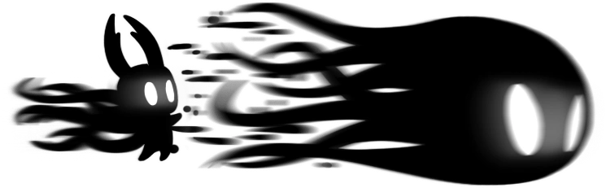

Hallownest es un reino subterráneo gigantesco, olvidado por el tiempo y poblado por insectos que alguna vez formaron una civilización avanzada. El mundo del juego está compuesto por distintas regiones interconectadas, cada una con su propia estética, fauna, mecánicas y música ambiental. Desde la sombría y lluviosa Ciudad de Lágrimas, hasta el verde y vivo Sendero Verde, o el misterioso Abismo donde nacen los seres del Vacío, cada zona cuenta una parte del pasado de Hallownest sin necesidad de palabras.
Lo fascinante del mundo es que todo está construido para que lo descubras por ti mismo: no hay marcadores, ni flechas, ni explicaciones directas. En lugar de eso, debes seguir tu curiosidad, explorar cada rincón, leer entre líneas y observar cómo el diseño del entorno, los restos arquitectónicos y los enemigos te hablan de una civilización que alguna vez prosperó, pero que hoy es solo una sombra de lo que fue. Hallownest no solo es un escenario: es un personaje vivo, melancólico y lleno de secretos.
El reino de Hollownest, un reino olvidado y caido en las cenizas.
La historia de Hollow Knight se desarrolla lentamente a medida que exploras y descubres fragmentos del pasado, pero en el fondo gira en torno a la caída de una civilización por un conflicto entre dos fuerzas primordiales: el Rey Pálido, una entidad que trajo orden, racionalidad y conciencia a los insectos, y El Destello, una antigua deidad de luz y sueños que gobernaba antes de su llegada.
Al perder el culto de sus seguidores, El Destello se refugió en el mundo de los sueños, desde donde empezó a propagar una infección mental que corrompe los cuerpos y nubla las mentes. En un intento desesperado por contenerla, el Rey Pálido creó recipientes vacíos de voluntad, nacidos del Vacío, una sustancia oscura y sin alma. Su plan era encerrar a El Destello en uno de estos recipientes, el Hollow Knight, y sellarlo en lo profundo del reino.
Sin embargo, el recipiente no era completamente puro, y la infección comenzó a escapar lentamente, corrompiendo de nuevo el mundo. La historia trata temas profundos como la negación del pasado, el sacrificio inútil, el fracaso del perfeccionismo, y la forma en que los reinos —y las personas— caen cuando intentan suprimir lo que los hizo quienes son.
Ver más:
El protagonista del juego, conocido simplemente como el Caballero, es un ser silencioso y pequeño, pero con una importancia colosal. Como los demás recipientes, fue creado en el Abismo por el Rey Pálido, arrojado al olvido al no ser elegido como el "La Vacija Pura". Sin embargo, el Caballero sobrevive y regresa a Hallownest atraído por una misteriosa fuerza, con el destino de detener el sufrimiento del reino. A diferencia del Hollow Knight original, este nuevo recipiente muestra una voluntad silenciosa pero firme.
A lo largo de su viaje, el Caballero debe vencer a los Dreamers, tres figuras que protegen el sello que mantiene a El Destello y al Hollow Knight confinados. Al hacerlo, accede al templo final, donde tiene la opción de enfrentarse al Hollow Knight, tomar su lugar como nuevo sello o incluso enfrentar a la Radiance directamente, si descubre el camino al final verdadero. La misión del Caballero, aunque envuelta en misterio, es una búsqueda de propósito, redención y finalización de un ciclo de errores del pasado.
Es la historia de un ser considerado desechable, que sin palabras, sin gloria y sin promesas, se convierte en la última esperanza de un mundo que se está desmoronando.

Los aguijones son el arma principal del Caballero y sirven para realizar ataques cuerpo a cuerpo. A lo largo del juego, puedes mejorar el aguijón varias veces en la herrería del Forjaguijones, aumentando así su daño y eficacia en combate. Desde el aguijón oxidado inicial hasta el aguijón puro, cada mejora requiere geo y minerales especiales llamados Pale Ore. A medida que avanzas, estas mejoras se vuelven esenciales para enfrentarte a enemigos más fuertes y reducir el tiempo de combate.
Los hechizos permiten usar ataques mágicos a cambio de Alma, una energía que se obtiene golpeando enemigos. Hay tres hechizos principales: uno lanza un proyectil hacia adelante, otro crea una explosión hacia abajo y el último lanza un ataque mágico vertical. Cada uno puede mejorarse a una versión más poderosa que inflige mayor daño y tiene mejor alcance. Estos hechizos son ideales para atacar a distancia o en momentos en que no puedes acercarte al enemigo, y son una parte clave para construir un estilo de juego mágico o versátil.
Los amuletos son objetos especiales que modifican las habilidades del Caballero y permiten personalizar su estilo de juego. Hay amuletos que potencian los ataques físicos, otros que mejoran los hechizos, y algunos que facilitan la recolección de alma o aumentan la velocidad, defensa o movilidad. Puedes equipar varios según la cantidad de ranuras disponibles, y combinarlos estratégicamente para adaptarte a diferentes situaciones o jefes. En general, los amuletos te permiten construir un enfoque ofensivo, defensivo o equilibrado, y son esenciales para aprovechar al máximo las habilidades del Caballero.